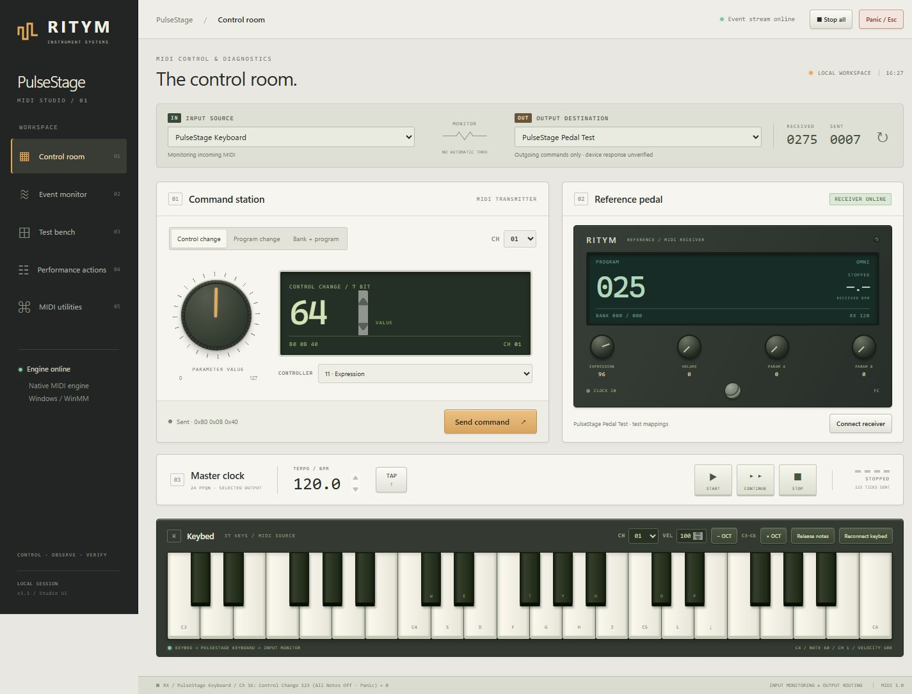
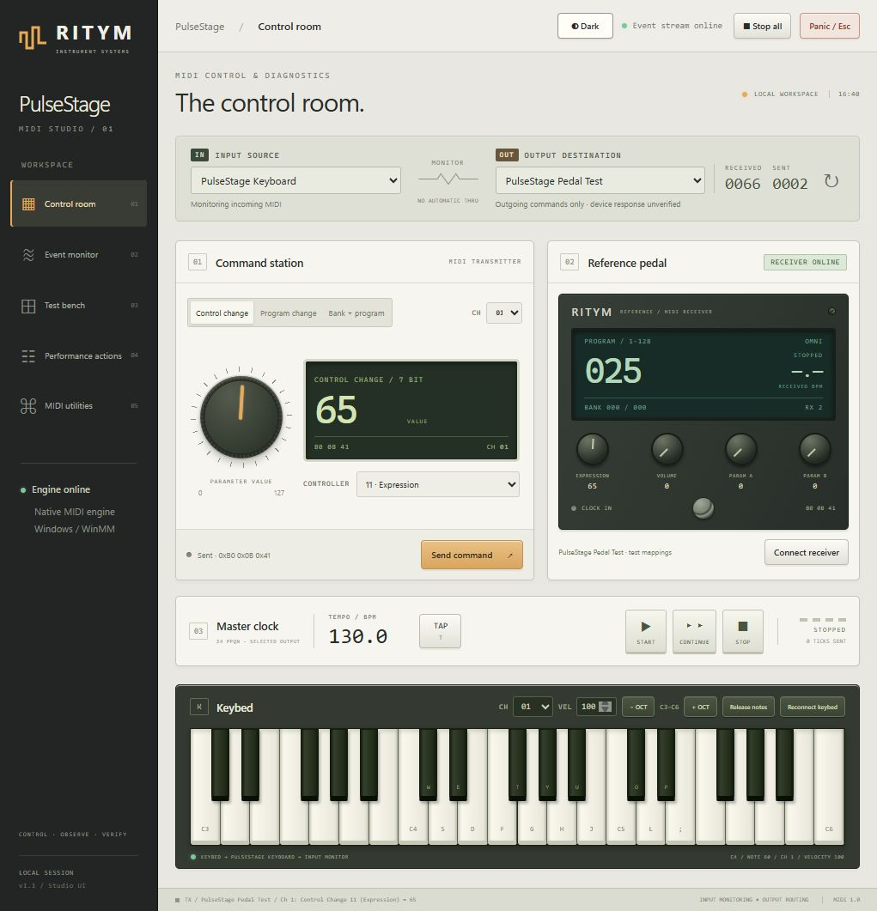
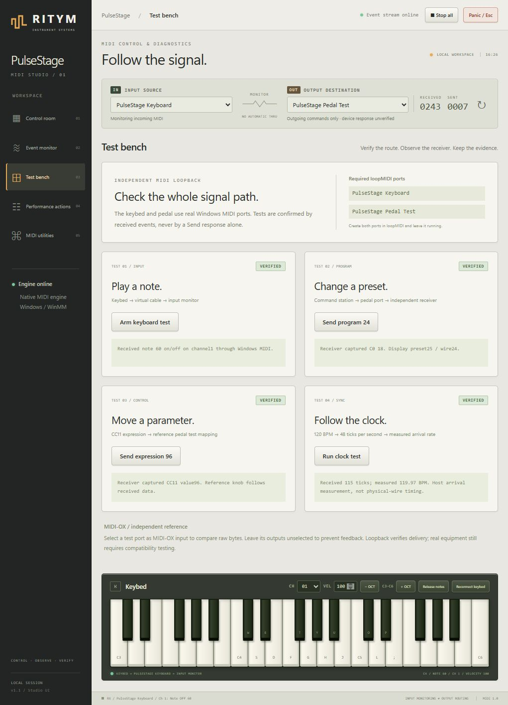

PulseStage — MIDI Studio Operator Guide
Version 1.0.0 — Standalone Windows Production Manual

1. What PulseStage Does (And What It Does Not)
PulseStage is a dedicated Windows application engineered for stage musicians, keyboardists, guitarists, and studio engineers who need reliable, direct control over their MIDI equipment. It manages preset changes, continuous controllers, master tempo clocks, and custom performance sequences while offering real-time diagnostic monitoring.
What PulseStage Is:
- A MIDI Control Command Station: Transmits Program Change (PC), Bank Select (MSB CC0 / LSB CC32), and Control Change (CC) messages to hardware synthesizers, digital guitar modelers, vocal processors, and outboard gear.
- A Master MIDI Clock Source: Generates stable 24-PPQN (pulses per quarter note) MIDI timing with Start, Continue, and Stop transport commands.
- An Inspection and Diagnostic Monitor: Captures, decodes, timestamps, and graphs every incoming and outgoing byte stream across all 16 MIDI channels.
- A Macro Action Engine: Executes custom multi-step preset and parameter chains with deterministic millisecond delays.
- An Integrated Practice Lab: Features an on-screen velocity-sensitive keybed and a reference receiving pedal for driver-free testing.
- NOT a Digital Audio Workstation (DAW): PulseStage does not record, mix, or edit multi-track audio.
- NOT an Audio Synthesizer: PulseStage processes digital control data (MIDI bytes), not sound waves. A successful transmission does not produce sound unless routed to an active hardware synthesizer or software instrument.
- A Silent Test Is Valid: Because MIDI is pure control information, successful parameter changes and preset selections are completely silent unless an external sound generator is connected.
2. Installation and First Launch
PulseStage is distributed as a self-contained Windows setup executable: PulseStage-Setup-1.0.0-x64.exe.
- Zero Prerequisites: You do not need Python, pip, C++ compilers, or developer tools installed. The complete runtime, dependencies, and UI assets are bundled.
- Installation Path: Installs cleanly to
C:\Program Files\PulseStage(or per-user Programs directory). - AppData Persistence: User preferences, custom actions, and logs reside in
%APPDATA%\PulseStage\, keeping your presets completely safe across application updates. - Dedicated Desktop App: Runs as an isolated desktop window without distracting terminal popups, binding securely to local loopback
127.0.0.1.

3. Non-Musician MIDI Primer
| Concept | What It Does | Real-World Analogy |
|---|---|---|
| Note On / Off | Triggers and releases a musical pitch with velocity. | Pressing and releasing a key on a piano. |
| Program Change (PC) | Switches the active sound patch or preset. | Selecting "Preset 24: Overdrive Lead" on a pedal. |
| Bank Select (CC0/CC32) | Expands presets into multiple banks of 128. | Flipping to a new folder of presets. |
| Control Change (CC) | Continuous controller values (0–127). | Adjusting an expression pedal or volume knob. |
| MIDI Clock | 24 PPQN pulses synchronizing tempo. | A digital conductor's metronome. |
4. Hardware Discovery & Signal Direction
Connect your USB-MIDI keyboard or USB-MIDI DIN interface to Windows. In PulseStage's top connection bar, click Refresh MIDI ports and select your device.
RX (Receive): Listens to incoming data from hardware controllers.
TX (Transmit): Sends commands and clock pulses to your equipment.
No Automatic Thru: Incoming notes are not automatically echoed to the output to prevent stage feedback loops.
5. Dual-Mode Practice Lab
PulseStage provides two distinct practice and testing modes:
- Mode A: Driver-Free Internal Practice Lab (Default): Works immediately out of the box with zero third-party drivers. Keybed notes dispatch directly to the input monitor, and commands dispatch to the Reference Pedal display.
- Mode B: Windows loopMIDI Loopback: Used for testing with external diagnostic tools like MIDI-OX. Requires the free loopMIDI driver with ports
PulseStage KeyboardandPulseStage Pedal Test.
6. Console Tour & Controls
The Studio interface includes:
- Command Station: Edit PC, CC, and Bank commands with explicit Send Command transmission.
- Master Clock: Set BPM (40–300), Start, Continue, Stop, and Tap Tempo.
- Integrated Keybed: Play notes with mouse or keyboard (A–;). Velocity, octave, and auto-release watchdog.
- Reference Pedal: Live incoming status display (Program, Expression CC11, Volume CC7, Params CC12/13, Footswitch CC64, and measured BPM).

7. Event Monitor & Diagnostics
The Event Monitor records, timestamps, and decodes every MIDI packet. Includes real-time controller graphs, clock interval timing traces, and export options (JSON, CSV, formatted text).
8. Test Bench: Receiver-Verified Diagnostics
Four automated tests verify: Note On/Off, Preset Change, Parameter Control, and 120 BPM Clock tracking. Tests only PASS when confirmed receipt bytes arrive at the receiver.
9. Performance Actions & Utilities
Create and execute multi-step macros with deterministic millisecond delays. Pitch bend (14-bit bipolar), Channel Pressure, and raw SysEx tools are built-in.
10. Troubleshooting & FAQ
Consult the guide for port conflict resolution, driver restarts, and single-instance handling.